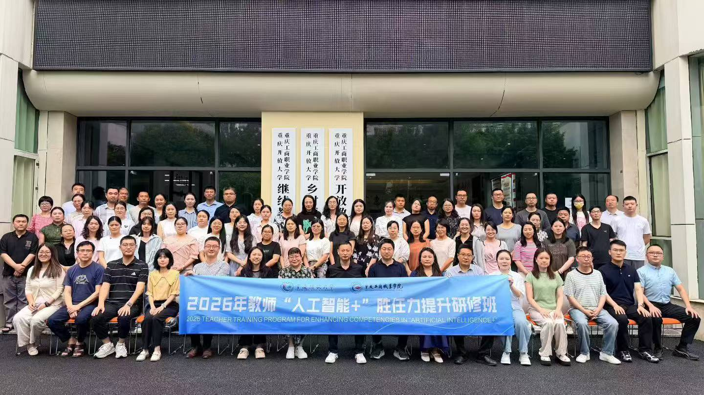
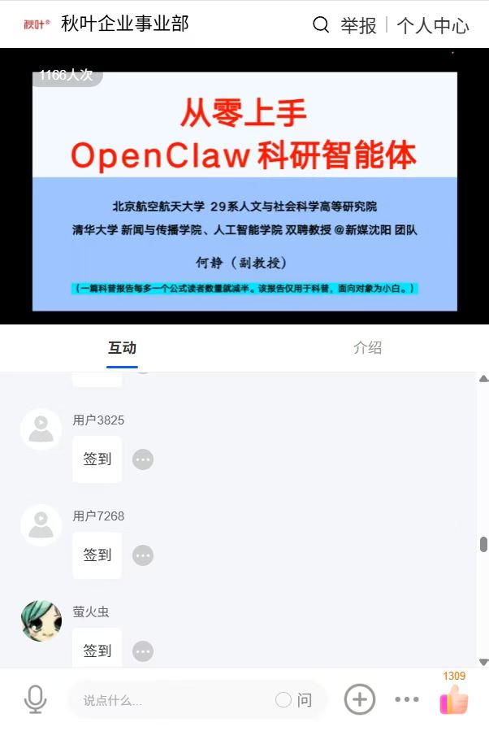
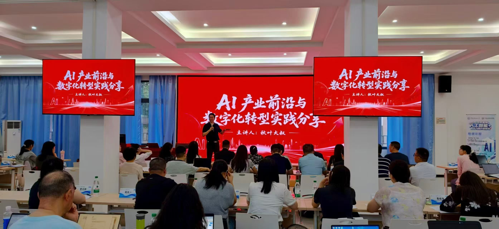
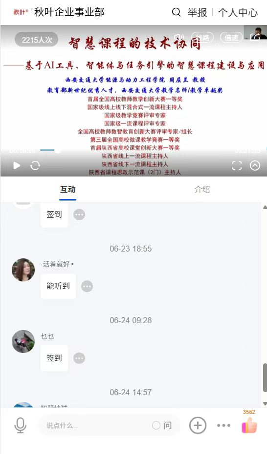
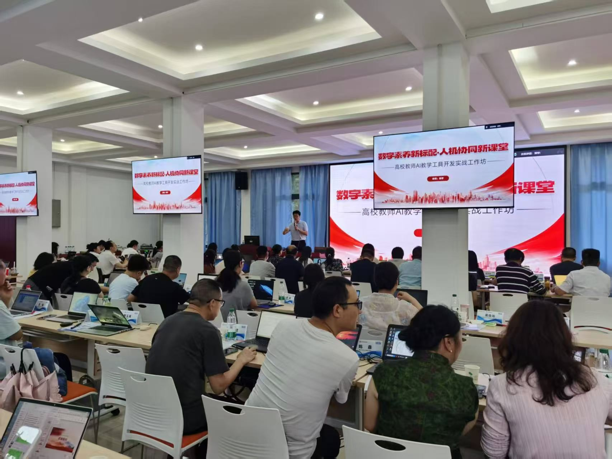
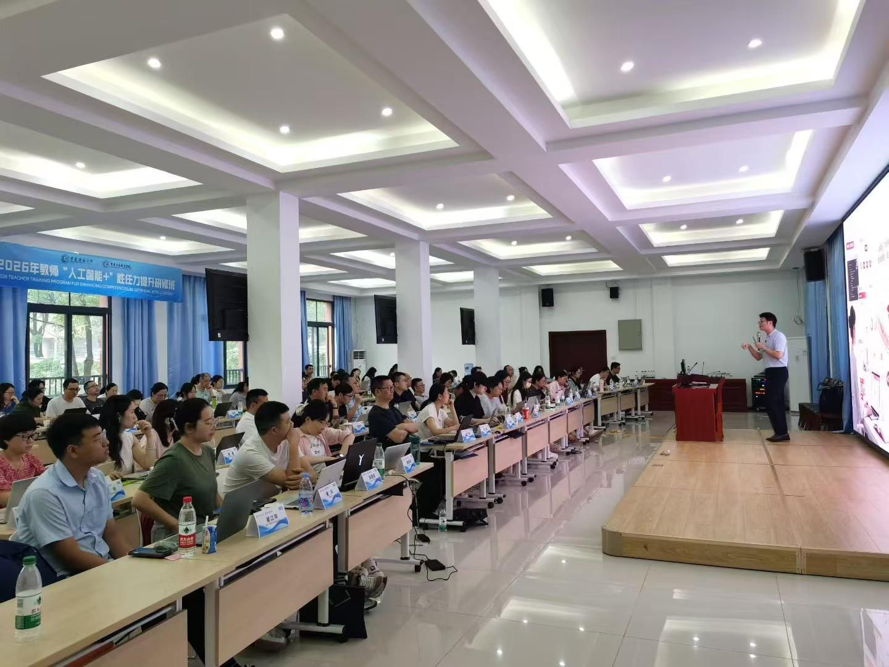

案例5
重庆开放大学
教师数字素养培训
2026年6月，重庆开放大学联合秋叶团队举办"人工智能+胜任力提升"
研修班，覆盖全市开放大学体系600余名教师
混合研修赋能
研修班为期6天，采用"3天线上 + 3天线下"混合式培训，理论讲授与实操演练相结合——985高校专家领衔授课，秋叶团队全程实操答疑。课程内容紧扣教学、科研、行政等核心场景，体系内教师全员覆盖，培训反响热烈
辐射效应
培训模式在开放大学体系内引发连锁关注——四川开大、贵州开大、云南开大、湖北开大等兄弟院校相继筹备同类培训